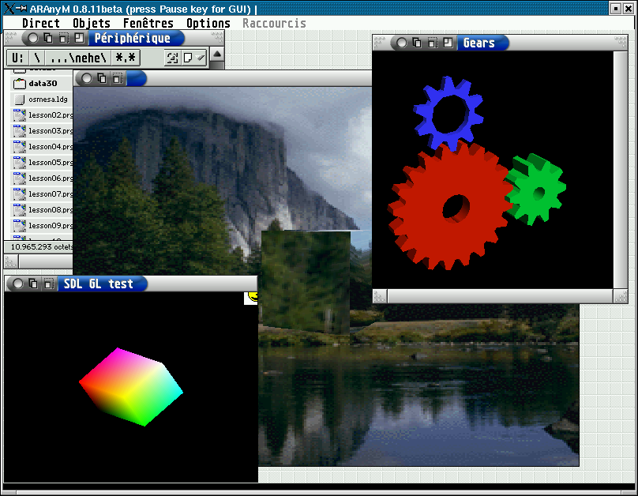
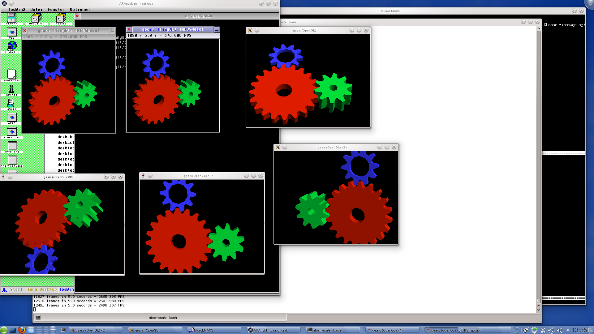
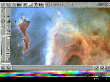
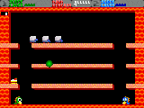
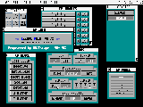
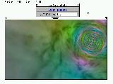

Screenshots
Patrice has sent the following screenshot: 
- Running MiNT as kernel
- Running MyAES as AES
- Running Direct as Desktop
- Running 3 SDL programs using OpenGL (host MesaGL rendering): testgl and sdlgears
Thorsten has sent the following screenshot: 
- Running MiNT 1.19 as kernel
- Running XaAES as AES
- Running Teradesk as Desktop
- Running 6 x gears demo using OpenGL:
- top-left 2 windows running on ARAnyM
- bottom-left 2 windows running windows programs using wine
- right 2 windows running native programs
- all programs compiled using the same source
I have removed the boring screenshots that were trying to show how fast ARAnyM is. It is real fast and nobody discredits that anymore so now I am focusing more on the compatibility question. Some guys think that ARAnyM does not run more than 30% of available software so let's have a look at some examples.
Please note that these are not typical examples of applications you would want to run on ARAnyM. For more application oriented screenshots please see Standa's page documenting the progress..
|  Isn't this Falcon only? |
This looks like a ... game? |
|  Doesn't run on AB40 but does on ARAnyM? |
 Heard that this is cool program |
ESCPaint on VIDEL TrueColor |
 Leftover from previous screenshots |
{kind=link}
{kind=link}
{kind=link}
{kind=link}
{kind=link}
{kind=link}


Copyright 2002 - 2017 by Petr Stehlik